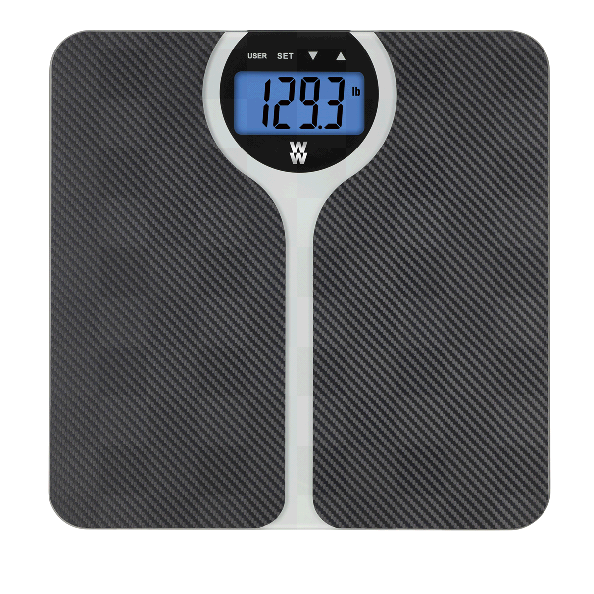

Diet Plan: Obese
You should try to eat a moderate breakfast and not much else throughout the day. It's all about improvement, keep a log about your weight and make sure you are
not gaining weight back.
As high calorie foods and fatty foods are a no-go, keep such foods out of your fridge, out of sight, out of mind!
Try intense excersizes,
as these can help losing weight dramatically. Make sure you are always sweating while doing them! However, remember that injuries are never what you want, if you
feel like you really can't go on, take a break!
As you lose body fat, you need to retain muscles. Keep excersizes with advanced muscle growth in mind.
Focus on
your mental state, you may not be loosing a lot on the scale, but your pants aren't tight anymore!
